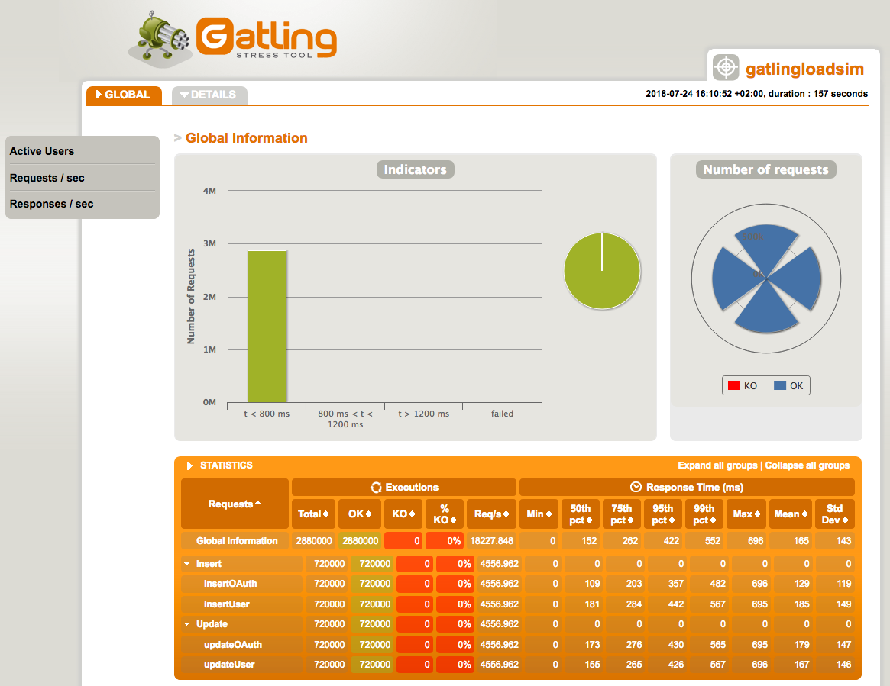
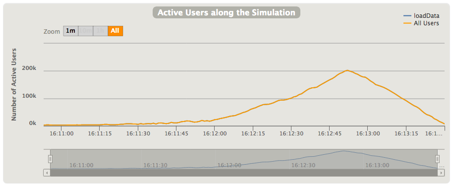
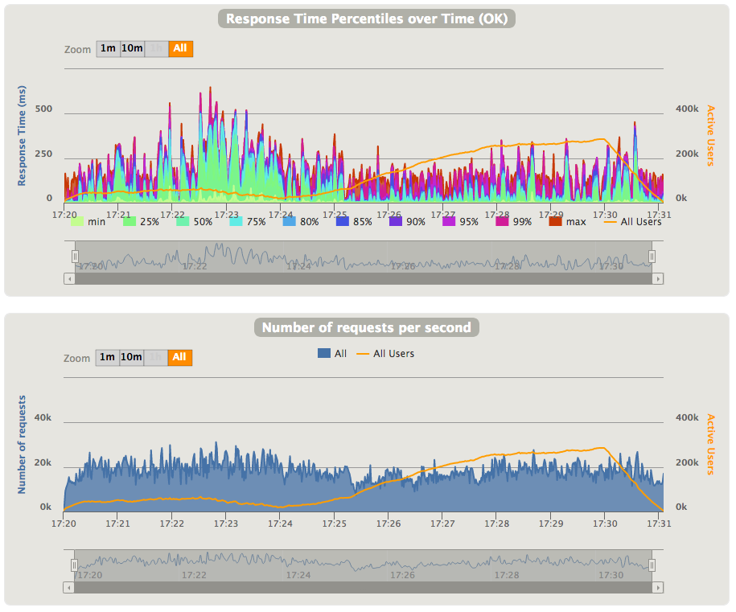

Performance testing of DSE with gatling-dse-plugin
Table of Contents
1 Introduction
Traditionally, to perform load testing of DSE & Cassandra the cassandra-stress tool was used - it's included into Cassandra's distribution, and only needs a configuration file to run. This is enough for simple types of testing, but it does not allow to perform very complex testing with access to multiple tables, generation of real-looking data, tuning individual queries, etc.
Gatling is popular tool for load testing of web applications that provides an embedded domain-specific language (DSL) on top of Scala (so basic knowledge of Scala is required). One of the main advantages of Gatling is that it allows to build complex scenarios, potentially consisting of multiple steps, and generate realistic workloads because test's author has complete control on how data is generated. You can also use assertions to check that response time, and other parameters meets your SLAs, and checks that are used to perform additional check of returned data.
For a long time, there was GatlingCql plugin that allowed to execute CQL statements from Gatling simulations, but it wasn't very actively developed in the last years, and it doesn't support full set of DSE functionality, such as, Graph.
In April 2018 DataStax testing team open sourced its own implementation of Gatling plugin for DSE that could be used to create real-looking simulations. Besides plugin, testing team also open sourced two other projects:
- gatling-dse-stress - it simplifies creation of simulations by providing implementation of feeders, configuration of connection to DSE, and additional helper functions;
- gatling-dse-simcatalog - catalog of already implemented simulations that could be reused to build the new one.
Both of these projects will be described in a separate article.
2 Basics of simulation's creation
Before we start, we need to understand some of the Gatling's concepts:
- Scenario defines a set of actions that should be executed, emulating real user's behaviour, etc.;
- Session keeps the user's data, generated by feeder, together with additional data that could be added via API, or other methods;
- Feeder is data generator that is used to populate user session. There could be multiple feeders defined for single session;
- Simulation combines together scenario(s), and defines what kind workload will be used (constant, increasing, etc.), configuration, etc.;
- Assertions are used to verify that global statistics, like response time, or number of failed requests, matches expectations for a whole simulation.
The code of simulation is usually organized in following manner, similar to other Gatling simulations:
- Declare simulation;
- Prepare environment:
- Setup DSE connection, create session, and instance of Gatling protocol;
- (optional) Create schema;
- Prepare necessary CQL statements;
- Define feeder(s) that will generate test data;
- Define scenario(s);
- Setup/execute simulation (if necessary, add assertions to check against desired SLAs).
2.1 Declaring simulation
First, you need to have a number of imports at the beginning of file - we need to import classes for Gatling, DSE Java driver, and gatling-dse-plugin (Note, that we import all classes from com.datastax.driver.core except the Session class, because it will clash with Gatling's Session class):
import com.datastax.driver.core.ConsistencyLevel._ import com.datastax.driver.core.{Session => _, _} import com.datastax.driver.dse.{DseCluster, DseSession} import com.datastax.gatling.plugin.DsePredef._ import com.datastax.gatling.plugin.DseProtocolBuilder import io.gatling.core.Predef._ import io.gatling.core.scenario.Simulation import io.gatling.core.structure.ScenarioBuilder
Then you need to create a class that extends the io.gatling.core.scenario.Simulation class, like this:
class MySimulation extends Simulation { // implementation ... }
2.2 Prepare environment
Preparing of the execution environment usually consists of 2 steps - establishing session to DSE cluster, and preparing queries that will be executed during test. In some cases, like data load tests, the preparation stage could also take care for creation of necessary tables (when session is established, you can execute arbitrary CQL statements via session.execute).
2.2.1 Setup connection/session/protocol
To initialize connection to DSE cluster, and instantiate the Gatling's protocol, we need, as usual, create an instance of DseCluster class, and then obtain from it an instance of DseSession. The last step is creation of a DseProtocolBuilder object that will be used to setup the simulation (at last step). The code could be from simple code like this (with hardcoded IP address):
val clusterBuilder = new DseCluster.Builder val cluster: DseCluster = clusterBuilder.addContactPoint("127.0.0.1").build() val dseSession: DseSession = cluster.connect() val cqlConfig: DseProtocolBuilder = cql.session(dseSession)
to more complex, like this:
val clusterBuilder = new DseCluster.Builder clusterBuilder. withSocketOptions(new SocketOptions(). setKeepAlive(true). setTcpNoDelay(true)). withQueryOptions(new QueryOptions(). setDefaultIdempotence(true). setPrepareOnAllHosts(true). setReprepareOnUp(true). setConsistencyLevel(LOCAL_ONE)). withPoolingOptions(new PoolingOptions(). setCoreConnectionsPerHost(HostDistance.LOCAL, 1). setMaxConnectionsPerHost(HostDistance.LOCAL, 2). setNewConnectionThreshold(HostDistance.LOCAL, 30000). setMaxRequestsPerConnection(HostDistance.LOCAL, 30000)) System.getProperty("contactPoints", "127.0.0.1").split(",") .foreach(clusterBuilder.addContactPoint) val cluster: DseCluster = clusterBuilder.build() val dseSession: DseSession = cluster.connect() val cqlConfig: DseProtocolBuilder = cql.session(dseSession)
As you can see from this code, we can configure all necessary parameters, such as connection pooling, default query options, etc. To avoid hard-coding the list of the DSE cluster's contact points, the default value (127.0.0.1) could be overwritten by specifying the Java's system property contactPoints (as comma-separated list of hosts).
After the DseSession object is created, it's then used to obtain an instance of the DseProtocolBuilder that will be used to configure simulation at the last step of the whole process.
2.2.2 Prepare CQL statements
To reach optimal performance it's always recommended to prepare queries if they are used multiple times. In Gatling simulations it's done the same way as in normal Java/Scala code - by calling the prepare function on the session object, like this:
val insertPrepared: PreparedStatement = dseSession.prepare("INSERT INTO ks.table(col1, col2, col3) VALUES(?,?,?)")
2.3 Define feeder(s)
Feeder(s) definition is really important for success of your load test - it should generate data with distribution maximally close to the expected (or already existing) data distribution inside the tables.
Gatling's Feeder type is just an alias for Iterator[Map[String, T]] type - this means that we can use any implementation that produce instances of the Map[String, T] class. The simplest approach to it is to use Iterator.continually with function that will generate instances of the Map class, something like this (type here is Map[String, Any]):
val random = new java.util.Random val feeder = Iterator.continually({ Map( "col1" -> UUID.randomUUID(), "col2" -> random.nextInt() )})
Gatling provides several implementations of feeders - they can feed data from CSV, JSON, Redis, JDBC, and other sources, and allows to apply necessary transformations for input data. For example, CSV feeder only returns String objects, and you may need to convert some fields to numbers, or other types.
Sometimes, when you work with DSE, you'll need to define your own feeders with more complex implementation. This is usually required when your tables use the user-defined types (UDTs). In this case, you can't simply create a value, but you need to fetch necessary metadata from database to create an instance of the UDT. This task is not really complex, as you may see in following example, but requires some coding to create correct object instances.
When you're plug-in the feeder into scenario, the data generated by feeder is merged with data already existing in the user's session object. This allows us to use multiple feeders in the same scenario - this is especially useful when you have an existing library of feeder's implementations, and can reuse them in new tests.
Note: Quite often, the Java Faker library is used for generation of people/company names, domains, addresses, numbers, dates, etc. Using this library it's possible to generate much more realistically looking data than by using standard random generators. But we need to take into account that it could slow down the data generation (for example, in examples below, generation of user name, address & book code adds almost 600 microseconds per call to data generation).
2.4 Define scenario
The scenario is defined by scenario function that accepts the name of scenario as an argument, and then this instance is populated with feeders, structure elements (exec, pause, …), and other components, such as groups, loops, conditionals, etc. The exec element accepts the action's definition, or function that should transform the user session object. There are multiple implementations of actions, like, http that comes together with Gatling, and used to execute HTTP requests. The gatling-dse-plugin adds the cql action that is used to execute queries against DSE. This action alone doesn't do anything, so you need to specify additional parameters by calling different functions on the action object. You can execute raw CQL with executeCql, execute prepared query with executePrepared, plus some other. You can also set query-specific options, by adding the call to functions like, withConsistencyLevel, withDefaultTimestamp, withFetchSize, etc.
In the simplest case, scenario could look as following: we create it, then add feeder to it, and executing one CQL statement per user session (we're using Gatling's string interpolation to feed data into string):
val loadDataSimple: ScenarioBuilder = scenario("loadDataSimple") .feed(feeder) .exec(cql("InsertData") .executeCql(s"insert into table x(col1) values('${col}'"))
In more complex cases scenario could look as following:
val loadData: ScenarioBuilder = scenario("loadData") .feed(feeder) .group("Insert")( exec(cql("InsertOAuth") .executePrepared(insertPrepared) .withParams(List("token_id", "nonce1", "user", "created", "expires", "attrs", "ttl"))) .exec(cql("insertUser") .executePrepared(insertPrepared2) .withParams(List("token_id", "nonce1", "user", "created", "expires", "attrs", "ttl"))) ) .pause(1) // wait 1 second before rotating token... .group("Update")( exec(cql("updateOAuth") .executePrepared(updatePrepared) .withParams(List("ttl", "nonce2", "token_id"))) .exec(cql("updateUser") .executePrepared(updatePrepared2) .withParams(List("ttl", "nonce2", "user", "token_id"))) )
In this case scenario consists of 2 groups with pause between them, and every group includes execution of 2 prepared queries - for insertion and update of data correspondingly. The withParams function is used to specify parameters that will be bound into the query. You can either specify a list of key names from the session object, or you can specify a variable number of session expressions that will be bound into query.
If you have many tests and complex scenarios you may consider to refactor scenarios into individual steps by defining the number of the ChainBuilder instances that are later wired into scenario, like this:
val part1: ChainBuilder = exec(cql("updateOAuth") .executePrepared(updatePrepared) .withParams(List("ttl", "nonce2", "token_id"))) .exec(cql("updateUser") .executePrepared(updatePrepared2) .withParams(List("ttl", "nonce2", "user", "token_id"))) val loadData: ScenarioBuilder = scenario("loadData") .feed(feeder) .exec(part1)
You can find more examples on how you can structure your tests in the Gatling's advanced tutorial.
Action may contain not only execution of the queries, but can also contain additional checks that could be added to query via functions withCheck (or simply check for single check), or withChecks (for multiple checks). gatling-dse-plugin provides a number of checks, for example, rowCount returns a number of fetched rows, schemaInAgreement returns current state of schema agreement in cluster, resultSet is returning the ResultSet instance for given query (there are also functions allRows & oneRow), and many other. For example, result set could be stored in the session object with saveAs function implemented in Gatling, and then analyzed as a separate step (for example, to populate user session with data from database). Here is the small example:
exec(cql("SelectData") .executePrepared(selectPrepared) .withParams(List("id")) .withChecks(resultSet.saveAs("fetchedData"), rowCount.greaterThan(0) ) ) .exec({session: Session => val fetchedData = session("fetchedData").as[ResultSet].one // do something with fetched data... session })
Full list of checks implemented by plugin you can find on GitHub.
2.5 Setup simulation
After you defined the scenario, you can setup it for execution. This is done by defining setUp where you need to inject necessary load into scenario, and then specify which protocol(s) to use. For example, following example use our loadData scenario with 3 injection profiles:
- perform the load test with 25% of concurrent users during 1/4 of the total test duration time (configured elsewhere) - this step is usually used to warm up the database;
- do nothing for 1 minute, so DB can catch up with GC, compactions;
- perform full-scale test with configured number of concurrent users during the configured test duration time.
setUp(
loadData.inject(
constantUsersPerSec(concurrentSessionCount / 4) during (testDuration / 4),
nothingFor(FiniteDuration(1, TimeUnit.MINUTES)),
constantUsersPerSec(concurrentSessionCount) during testDuration
)
).protocols(cqlConfig)
Gatling provides several implementation of injection profiles:
- with constant number of concurrent users per second (with
constantUsersPerSec); - with increasing number of users per second from one number to another number (with
rampUsersPerSec); - injection of given number of users at once (with
atOnceUsers); - etc.
Please check Gatling's documentation for more information. You need to select injection profile that matches your needs. For example, you can use constantUsersPerSec profile for load tests where you want to make sure that there are no performance problems with code, or use rampUsersPerSec profile to detect what is the maximal number of users your system can handle.
The protocols function specifies what protocol implementation should be used for given test scenario. We've created an instance of protocol for CQL, but you can also use multiple protocols at the same time, for example, if you want to test mixed application that makes both CQL & HTTP queries (for example, if you're using DSE Search functionality that only available via HTTP API).
3 Building simulation
There are several ways to build & execute your simulation:
- Build the complete package together with Gatling, and execute it - this method is described below;
Build the package without Gatling (but with all other dependencies - this should be faster to build), copy resulting package into Gatling's
libdirectory & execute it with command like this:java -cp conf:`echo lib/*.jar | sed 's/ /:/g'` io.gatling.app.Gatling \ -s com.datastax.demos.gatling.GatlingLoadSim -rf results
where the
-sflag specifies the name of Simulation class, and-rfspecifies the folder to put results.For this case, the
pom.xmlfile looks almost the same way as when we're building the package with Gatling, but need to declare thegatling-charts-highchartsdependency asprovided;- Copy the source code for your simulation into
user-files/simulationsdirectory of Gatling's distribution, and execute it viabin/gatling.shscript that will compile source code, and execute resulting class. (This approach unfortunately won't work out of the box because of the existing problem with Scala compiler andDseClusterclass. Our testing team sent a pull request to Gatling that should allow to handle this problem, but it could be available only in the next version of Gatling). You also need to copy all necessary dependencies, such as,gatling-dse-plugin, etc. intolibdirectory of unpacked Gatling distribution; - Use gatling-maven-plugin or gatling-sbt-plugin to execute simulations (there is also unofficial Gradle plugins). By using these plugins you can easier integrate Gatling-based load tests into your projects.
3.1 Building complete package with Maven
The official builds of the gatling-dse-plugin are available at DataStax's Maven repository, so to use it in your project, you need to add corresponding declaration to your pom.xml file:
<repositories> <repository> <id>DataStax-Repo</id> <url>https://repo.datastax.com/public-repos/</url> </repository> </repositories>
Then you need to include necessary dependencies for gatling-dse-plugin & Gatling itself (you can find information about the latest version of the plugin on GitHub):
<dependency> <groupId>com.datastax.gatling.plugin</groupId> <artifactId>gatling-dse-plugin_2.12</artifactId> <version>1.2.2</version> </dependency> <dependency> <groupId>io.gatling.highcharts</groupId> <artifactId>gatling-charts-highcharts</artifactId> <version>2.3.1</version> <!-- uncomment this if you want to build package just for your application, without Gatling inside --> <!-- <scope>provided</scope> --> </dependency>
And add necessary pieces to compile the Scala code & pack everything into one jar file when you execute the mvn package command.
4 Executing simulation
Execution of packaged simulation is just simple - specify the path to the packaged jar file, and specify the name of the class with simulation, plus necessary parameters:
java -cp <packaged-jar-file> [system properties] io.gatling.app.Gatling -s <simulation-class> [-rf <results-directory>]
where:
io.gatling.app.Gatling- name of the Gatling's main class;-sflag specifies the name of Simulation class;-rfflat specifies the folder to put results.system propertieslist of additional parameters that your simulation will consume (if it's implemented).
For example, here is the command line that was used to run the example simulation described below (please note that I've included gatling-charts-highcharts-bundle-2.3.0/conf into class path to re-use the Gatling's configuration files):
java -cp <path-to>/gatling-charts-highcharts-bundle-2.3.0/conf:target/gatling-plugin-sim-0.0.1-jar-with-dependencies.jar \ -DcontactPoints=192.168.0.10 -DtestDuration=2 -DconcurrentSessionCount=10000 \ io.gatling.app.Gatling -s com.datastax.demos.gatling.GatlingLoadSim -rf results
During execution of the simulation, current statistics is printed to the screen. It shows the number of executed requests globally & per group, current and execution time, number of active/waiting/finished users, and other information, like overall progress. The status OK shows the number of successfully executed requests, and KO shows the number of failed requests (0 in our example):
================================================================================
2018-07-24 16:11:47 55s elapsed
---- Requests ------------------------------------------------------------------
> Global (OK=807192 KO=0 )
> Insert / InsertOAuth (OK=204531 KO=0 )
> Insert / insertUser (OK=202970 KO=0 )
> Update / updateOAuth (OK=200815 KO=0 )
> Update / updateUser (OK=198876 KO=0 )
---- loadData ------------------------------------------------------------------
[####################-- ] 27%
waiting: 509979 / active: 11145 / done:198876
================================================================================
Note: It's important to track the number of active users here - if it's grows very fast, then your system isn't able to handle so much load, and number of simultaneous users should be decreased.
When simulation finishes, something like this will be printed to the screen:
Simulation com.datastax.demos.gatling.GatlingLoadSim completed in 157 seconds Parsing log file(s)... Parsing log file(s) done Generating reports... ================================================================================ ---- Global Information -------------------------------------------------------- > request count 2880000 (OK=2880000 KO=0 ) > min response time 0 (OK=0 KO=- ) > max response time 696 (OK=696 KO=- ) > mean response time 165 (OK=165 KO=- ) > std deviation 143 (OK=143 KO=- ) > response time 50th percentile 152 (OK=152 KO=- ) > response time 75th percentile 262 (OK=262 KO=- ) > response time 95th percentile 422 (OK=422 KO=- ) > response time 99th percentile 552 (OK=552 KO=- ) > mean requests/sec 18227.848 (OK=18227.848 KO=- ) ---- Response Time Distribution ------------------------------------------------ > t < 800 ms 2880000 (100%) > 800 ms < t < 1200 ms 0 ( 0%) > t > 1200 ms 0 ( 0%) > failed 0 ( 0%) ================================================================================ Reports generated in 62s. Please open the following file: <some-path...>/results/gatlingloadsim-1532441452451/index.html
This includes basic statistics about execution of simulation: number of requests, minimal/maximal/percentiles of response time, etc. This information is often enough to get a quick understanding of your system performance, and you can also find more information in the generated HTML report described below.
Note: as you may see, the test was completed in 157 seconds, although the test duration was specified as 120 seconds (2 minutes). This is a signal that system don't have enough throughput, and need an additional time to finish processing of all scheduled user sessions.
To get correct results from load testing we need to perform test quite long enough, so the things like garbage collection, compaction, etc. will happen during that time, and we'll see how this can influence performance of our system.
5 Checking results
When simulation finishes Gatling may generate an HTML report that will be put as separated directory under directory specified in the -rf command-line option. The directory name has format gatlingloadsim-<timestamp>, and full path to the main file is printed as part of final message (see above). This report has 2 parts:
- Global, that provides information about whole simulation (with some statistics about individual groups & actions);
- Details, that provides information about individual actions.
Here is what you'll see the HTML report (the page is split into separate images to make it more readable). All graphs also have tooltips that shows more details about individual graph points.
First part of the Global page includes information about overall requests number, and numbers for individual groups/actions, together with statistics for every part:

Most important numbers here are response times, especially the 99th percentile and max response time, together with number of requests per second, and number of requests executed with error.
Next section shows the number of active users in the executed simulation - in this example I've used rampUsersPerSec injection that increase the number of simultaneous users over the time until it reach given value (here from 2,000 to 10,000 over the 2 minutes). As you can see on the graph, at some point of time this number is started to increase, so it's clear sign that system can't handle more users without increasing response latency. (You can see the graphs for other constantUsersPerSec injection at the end of this section):

Next 2 sections show the data about response times - overall distribution of response time values, and how the response time percentiles are changed during execution of the simulation. If you're using the complex scenario, the response time will be calculated for whole scenario - to check response time of individual queries you need to look into "Details" tab. Please note, that the second graph, for convenience, shows the number of active users:
And the last 2 sections shows the data about number of requests/responses over the time:
The Details part allows use to look to the results for individual tests, like, inserts or updates of individual tables. The structure of information is almost the same as for Global part.
We can compare graphs from above, that were generated for simulation with rampUsersPerSec injection with graphs from simulation with constantUsersPerSec injection. The first graph shows data for 10,000 simultaneous users - you can notice that number of active users is increasing over the time until it reach specified period of time, and then is decreasing when simulation stops creation of new users. You may also notice that latency is quite high, even for 50th percentile. This is a clear sign that the system is overloaded, although it's able to handle about 20,000 requests per second.
We can try the same simulation with 5,000 simultaneous users, and we can notice the difference - all latencies went down, and number of active users is almost on the same level, except the initial period of time. But in this case we're able to handle only slightly more than 10,000 requests per second.

6 Simulation examples
This section contains examples of the Gatling-based simulations for DSE load testing. We're implementing something like OAuth token management (this is just an example, not real application!).
Full source code for these simulations is located in the directory plugin-sim of the
https://github.com/alexott/gatling-dse-examples repository.
6.1 Data structure
We'll have data in the 2 tables with similar structure, but with different primary key: one table will keep individual OAuth tokens, and second table will store OAuth tokens issued for specific user, so we can revoke all of them if necessary. The tables are in the gatling keyspace with table structure is defined as:
CREATE TABLE oauth_tokens ( id uuid, nonce int, user text, created timestamp, expires timestamp, attributes frozen<map<text, text>>, PRIMARY KEY(id) ); CREATE TABLE user_tokens ( user text, id uuid, nonce int, created timestamp, expires timestamp, attributes frozen<map<text, text>>, PRIMARY KEY(user, id) );
The full schema specification is in the cql/create-schema.cql file, and could be created by using following command (modify keyspace names and replication strategy, if necessary):
cqlsh <DSE-IP> -f cql/create-schema.cql
6.2 Simulation for loading data into database
During execution of this simulation, we'll insert data into tables, and then updates the parts of the data several seconds later. Source code is in the file GatlingLoadSim.scala.
6.2.1 Prepare environment
The necessary imports, etc. are matching to the examples shown at the begin of the article, so we just concentrate on pieces of code:
First we need to setup connection, establish it, and create configuration object that will be used to setup simulation:
val clusterBuilder = new DseCluster.Builder clusterBuilder. withSocketOptions(new SocketOptions(). setKeepAlive(true). setTcpNoDelay(true)). withQueryOptions(new QueryOptions(). setDefaultIdempotence(true). setPrepareOnAllHosts(true). setReprepareOnUp(true). setConsistencyLevel(LOCAL_ONE)). withPoolingOptions(new PoolingOptions(). setCoreConnectionsPerHost(HostDistance.LOCAL, 1). setMaxConnectionsPerHost(HostDistance.LOCAL, 2). setNewConnectionThreshold(HostDistance.LOCAL, 30000). setMaxRequestsPerConnection(HostDistance.LOCAL, 30000)) val srvList = System.getProperty("contactPoints", "127.0.0.1").split(",").toList srvList.foreach(clusterBuilder.addContactPoint) val cluster: DseCluster = clusterBuilder.build() val dseSession: DseSession = cluster.connect() val cqlConfig: DseProtocolBuilder = cql.session(dseSession)
After that we'll need to create necessary prepared statements:
val insertPrepared: PreparedStatement = dseSession.prepare( "insert into gatling.oauth_tokens(id, nonce, user, created, expires, attributes) values(?,?,?,?,?,?) using TTL ?"); val insertPrepared2: PreparedStatement = dseSession.prepare( "insert into gatling.user_tokens(id, nonce, user, created, expires, attributes) values(?,?,?,?,?,?) using TTL ?") val updatePrepared: PreparedStatement = dseSession.prepare( "update gatling.oauth_tokens using TTL ? set nonce = ? where id = ?") val updatePrepared2: PreparedStatement = dseSession.prepare( "update gatling.user_tokens using TTL ? set nonce = ? where user = ? and id = ?")
6.2.2 Define feeders
Definition of feeder is very important for our use case. We need to create real-world looking authentication token IDs & user names. For token IDs we're just generating random UUIDs, and for user names are generated by using methods from Java Faker library. Other fields are generated by appropriate methods just to occupy enough space in table. Every record also gets the TTL of the 30 minutes:
def random: ThreadLocalRandom = { ThreadLocalRandom.current() } val defaultTTL = 30 * 60 // 30 minutes val faker = new Faker() val feeder = Iterator.continually({ val timestamp = java.time.Instant.now() Map( "token_id" -> UUID.randomUUID(), "user" -> faker.name().username(), "nonce1" -> random.nextInt(), "nonce2" -> random.nextInt(), "created" -> timestamp.toEpochMilli, "expires" -> timestamp.plusSeconds(defaultTTL).toEpochMilli, "attrs" -> Map( "code" -> faker.code.isbn13(), "address" -> faker.address().fullAddress() ), "ttl" -> defaultTTL ) } )
Be very careful with data types - they need to match the actual data types in table's definitions. For example, timestamp could be specified as java.util.Date, Long, or String - in our example we're using Long type for timestamps.
6.2.3 Define scenario
As was mentioned above, our scenario includes two inserts into separate tables, and two updates of the nonce field in both tables, simulating rotation of the authentication token. Our scenario consists of feeder, two groups for inserts/updates, and pause between them:
val loadData: ScenarioBuilder = scenario("loadData") .feed(feeder) .group("Insert")( exec(cql("InsertOAuth") .executePrepared(insertPrepared) .withParams(List("token_id", "nonce1", "user", "created", "expires", "attrs", "ttl"))) .exec(cql("insertUser") .executePrepared(insertPrepared2) .withParams(List("token_id", "nonce1", "user", "created", "expires", "attrs", "ttl"))) ) .pause(1) // wait 1 second before rotating token... .group("Update")( exec(cql("updateOAuth") .executePrepared(updatePrepared) .withParams(List("ttl", "nonce2", "token_id"))) .exec(cql("updateUser") .executePrepared(updatePrepared2) .withParams(List("ttl", "nonce2", "user", "token_id"))) )
Every group together with individual actions have names, so we can easily find information about any of them in the report.
6.2.4 Setup/execute simulation
To make our test more flexible, we can pass the number of concurrent users & test duration (in minutes) as system properties with names concurrentSessionCount & testDuration correspondingly:
val testDuration = FiniteDuration(java.lang.Long.getLong("testDuration", 5), TimeUnit.MINUTES) val concurrentSessionCount: Int = Integer.getInteger("concurrentSessionCount", 100)
For our experiment we'll use different injection profiles to show difference on how results could look like:
using
rampUsersPerSecto emulate increase in number of concurrent users from 30% to 100% of target:setUp( loadData.inject( rampUsersPerSec(concurrentSessionCount / 3) to (concurrentSessionCount) during testDuration ) ).protocols(cqlConfig)using
constantUsersPerSecto create load with the same number of concurrent users:setUp( loadData.inject( constantUsersPerSec(concurrentSessionCount) during testDuration ) ).protocols(cqlConfig)using
constantUsersPerSecto create load with the same number of concurrent users, but with separate warm up stage under 25% of load during 1/4 of test time:setUp( loadData.inject( constantUsersPerSec(concurrentSessionCount / 4) during (testDuration/4), nothingFor(FiniteDuration(1, TimeUnit.MINUTES)), constantUsersPerSec(concurrentSessionCount) during testDuration ) ).protocols(cqlConfig)
It's also easy to add assertion to check that we don't have the failed requests - just add the assertion into chain when setting up the simulation, and provide condition(s) to check:
setUp(
loadData.inject(
constantUsersPerSec(concurrentSessionCount) during testDuration
)
).assertions(
global.failedRequests.count.is(0)
).protocols(cqlConfig)
6.2.5 Run simulation
We can use following command to run the simulation, specifying necessary parameters (it's the same as was shown above):
java -cp <path-to>/gatling-charts-highcharts-bundle-2.3.0/conf:target/gatling-plugin-sim-0.0.1-jar-with-dependencies.jar \ -DcontactPoints=192.168.0.10 -DtestDuration=10 -DconcurrentSessionCount=5000 \ io.gatling.app.Gatling -s com.datastax.demos.gatling.GatlingLoadSim -rf results
In this case we're running test for 10 minutes with maximal number of concurrent users equal to 5000.
6.2.6 Check results
When using rampUsersPerSec we get following graph for response time & number of requests per second:
As you can see, as the number of concurrent users started to increase, the 99th response time (and other percentiles as well) is increased from ~100ms to 350-500ms.
If we're putting the constant load of without pre-warm of the database, we get following graphs:

For constant load with pre-warm we've got following results - as you can see, even 50th percentile is quite high in this setup:
6.3 Simulation of mixed load
This simulation is slight modification of the previous example, and it's used to show how we can perform data selection. It will insert data into one table, wait 1 second, select data, and then update nonce field. Source code is in the GatlingMixedSim.scala.
The most of code is taken from previous simulation, so I won't describe it in the much details. The main changes are in the scenario's definition:
val selectPrepared = dseSession.prepare("select user, nonce from gatling.oauth_tokens where id = ?") val loadData: ScenarioBuilder = scenario("insert-select-update") .feed(feeder) .group("Insert")( exec(cql("InsertOAuth") .executePrepared(insertPrepared) .withParams(List("token_id", "nonce1", "user", "created", "expires", "attrs"))) ) .pause(1) // wait 1 second before selecting token... .group("Select")( exec(cql("SelectOAuth") .executePrepared(selectPrepared) .withParams(List("token_id")) // check that we received data from DSE .check(rowCount.greaterThan(0)) .check(resultSet.saveAs("fetchedData")) .check(columnValue("user").is(session => session("user").as[String])) .check(columnValue("nonce").is(session => session("nonce1").as[Int])) ) .group("Update")( exec(cql("updateOAuth") .executePrepared(updatePrepared) .withParams(List("nonce2", "token_id"))) )
As you can see, now we have an additional group with name Select that should perform CQL query to fetch value of fields user and nonce from database for token with given ID. This part is look similar to previous examples except the new section - the chain of calls to the check function that performs following checks on executed query:
- check that the number of returned rows is greater than zero;
- save fetched data into the session as
fetchedDatafield; - check that value of the
userfield in returned data matches the value ofuserfield in the session; - the same is for the field
nonce;
After we build this example, we can run it (don't forget to change the simulation name in the command line). And we can see the results on our graphs:
7 Additional information
This tutorial contains just enough information to start writing tests for DSE using Gatling. Gatling's site has quite detailed documentation on how you can use it. The Gatling cheatsheet page is also very useful resource when you just need to look to the syntax of particular function.
gatling-dse-plugin's wiki pages contain more information on how to use this plugin to test DSE Graph, some information about implementation, etc.